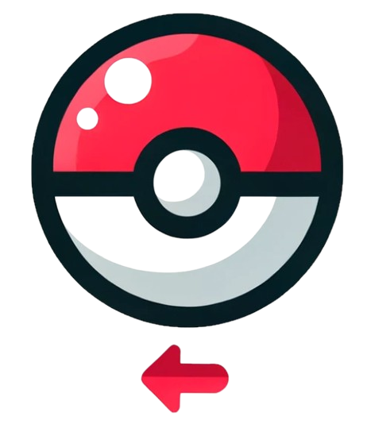

<!-- Template pour afficher la liste des Pokémon. -->
<div class="pokemon-list">
  <!-- Utilisation de *ngFor pour itérer sur chaque Pokémon dans le tableau paginatedPokemon. -->
  <div
    *ngFor="let pokemon of paginatedPokemon"
    (click)="goToPokemonDetails(pokemon.id)"
    (keyup.enter)="goToPokemonDetails(pokemon.id)"
    tabindex="0"
    [ngClass]="getTypeClass(pokemon.types)"
    class="pokemon-card"
  >
    <!-- Boucle sur chaque Pokémon et affichage de ses détails. -->
    <h2>{{ pokemon.name }}</h2>
    <!-- Affiche le nom du Pokémon. -->
    
    <!-- Utilisation de la syntaxe [src] pour définir dynamiquement la source de l'image en fonction du Pokémon. -->
    <!-- Affiche l'image du Pokémon. -->
    <!-- Conteneur pour les icônes des types du Pokémon -->
    <div class="pokemon-types">
      <!-- Boucle sur chaque type du Pokémon -->
      
    </div>
  </div>
</div>

<div class="pagination">
  <button (click)="previousPage()" [disabled]="currentPage === 1">
    
  </button>
  <!-- Utilisation de (click) pour déclencher la méthode previousPage() lorsque le bouton est cliqué. -->
  <!-- Utilisation de [disabled] pour désactiver le bouton s'il n'y a pas de page précédente. -->
  <button (click)="nextPage()" [disabled]="currentPage === totalPages">
    
  </button>
  <!-- Utilisation de (click) pour déclencher la méthode nextPage() lorsque le bouton est cliqué. -->
  <!-- Utilisation de [disabled] pour désactiver le bouton s'il n'y a pas de page suivante. -->
</div>
